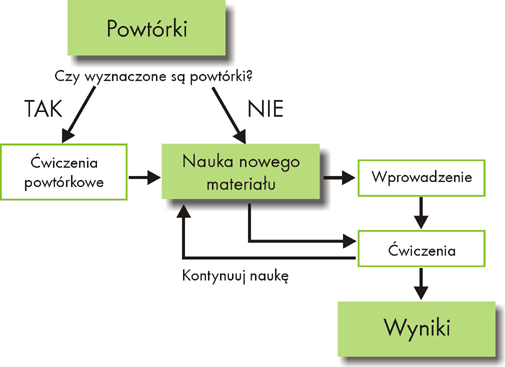

Jak siê uczyæ z programem?
Profesor Henry 6.0 - S³ownictwo uczy najbardziej potrzebnych s³ówek i zwrotów,
k³ad¹c nacisk na regularne, najbardziej optymalne powtarzanie. Si³¹ programu jest
algorytm powtórek, stworzony w oparciu o krzyw¹ zapominania, i rozwijany od 1996
roku. Dziêki algorytmowi nauka z programem przynosi znakomite efekty przy wzglêdnie
ma³ym nak³adzie czasu. Praca z programem polega przede wszystkim na regularnym
wykonywaniu wyznaczonych przez program powtórek - mamy wtedy gwarancjê, ¿e efektywnie uczymy siê nowych s³ówek. O skutecznoœci tej metody œwiadczyæ mog¹ tysi¹ce zadowolonych U¿ytkowników.
Tryby nauki z programem
Nauka nowego materia³u
Powtórki
Typy æwiczeñ
W jakiej kolejnoœci rozwi¹zywaæ æwiczenia?
Wprowadzenie
Menu æwiczenia
Opcja Zaakceptuj!
Skróty klawiaturowe
Nagrywanie
Edycja bazy
Jak siê uczyæ - krok po kroku
Poni¿szy schemat opisuje najbardziej skuteczn¹ metodê nauki z programem Profesor Henry 6.0 - S³ownictwo.

Tryby nauki z programem
Podstawowa metoda nauki - nowy materia³
Wybór materia³u do nauki
Domyœlnie dla pocz¹tkuj¹cych U¿ytkowników ustawiony zosta³ najskuteczniejszy tryb nauki s³ownictwa. Aby zacz¹æ naukê s³ówek i zwrotów, w Menu g³ównym programu wybieramy opcjê Nowy materia³ - kliknikaj¹c na odpowiedni¹ ikonê. Nastêpnie z rozwijanej listy wybieramy grupê tematyczn¹. Wybranie opcji Wszystkie spowoduje, ¿e s³ówka i zdania bêd¹ losowane z ca³ego zasobu programu. Pod nazw¹ grupy tematycznej wyœwietla siê informacja, ile s³ówek i zdañ jest w danym dziale oraz ilu s³ówek i zdañ aktualnie siê uczymy - oczywiœcie, przy pierwszym uruchomieniu bêdzie to 0.
Po wybraniu grupy tematycznej, zale¿nie od tego, czy chcemy uczyæ siê ca³ych zdañ,
czy tylko s³ówek, nale¿y klikn¹æ na Nauka s³ówek lub Nauka zdañ.
Po klikniêciu program wybiera od 10 do 50 (liczbê jednostek mo¿na zmieniæ) losowych
wyra¿eñ do nauki - w okienku wyœwietla siê komunikat o liczbie wylosowanych
przyk³adów. Naciœniêcie przycisku Rozpocznij naukê spowoduje przejœcie
do etapu nauki.
Wybór materia³u do nauki - opcje
Sposób losowania s³ówek i zdañ do nauki mo¿na ³atwo zmieniæ. Po pierwsze, mo¿na samemu okreœliæ liczbê przyk³adów losowanych za jednym razem - od 10 do 50. Po drugie, mo¿na pozostawiæ domyœlny tryb nauki (s³ówka losuj¹ siê z ca³ej, wybranej przez U¿ytkownika grupy tematycznej) lub zawêziæ zakres losowania, wybieraj¹c opcjê W³asne ustawienia materia³u. Po klikniêciu na tê zak³adkê wyœwietlaj¹ siê trzy listy, w których mo¿emy szczegó³owo okreœliæ zakres losowanych s³ówek. Filtrowanie s³ówek (zdañ) przydaje siê wtedy, gdy chcemy uczyæ siê konkretnych jednostek, na przyk³ad tylko ³atwych (ustawiamy poziom pocz¹tkuj¹cy) lub tylko czasowników (wybieramy odpowiedni¹ opcjê z listy Typ) albo wreszcie chcemy uczyæ siê tylko w trybie pytanie-odpowiedŸ (Tryb QA). Wciœniêcie Nauka spowoduje wylosowanie okreœlonej liczby jednostek wed³ug indywidualnych ustawieñ.
W ka¿dej chwili mo¿na zrezygnowaæ z w³asnego filtra i powróciæ do ustawieñ domyœlnych.
Uwaga! W oryginalnej bazie programu Profesor Henry 6.0 - S³ownictwo Poziom 3 & 4 dostêpne s¹ tylko s³ówka i zdania z poziomu 3 i 4. S³ówka ³atwiejsze zawiera czêœæ pierwsza programu - S³ownictwo Poziom 1 & 2.
Nauka
Po wciœniêciu przycisku Rozpocznij naukê wyœwietla siê okienko z wyborem
æwiczeñ. Wszystkie æwiczenia oparte s¹ na tej samej partii wylosowanych s³ówek
lub zdañ, a w nawiasie podana jest liczba przyk³adów w danym æwiczeniu. Liczba
ta mo¿e byæ ró¿na, poniewa¿ nie wszystkie typy æwiczeñ maj¹ zastosowanie do wszystkich s³ówek i zdañ. Zalecane jest wykonanie wszystkich æwiczeñ, poniewa¿ ka¿de z nich kszta³ci inn¹ umiejêtnoœæ jêzykow¹ (t³umaczenia, rozumienia ze s³uchu, wymowy, u¿ycia w odpowiednim kontekœcie), co pomaga w skutecznym przyswojeniu nowych s³ówek. Nie jest to jednak obowi¹zkowe i nie wp³ywa na zakres powtórek. W okienku wyboru æwiczeñ znajduje siê te¿ przycisk Wprowadzenie, pod którym ukryta jest prezentacja materia³u w formie "pokazu slajdów". Aby rozpocz¹æ wykonywanie æwiczeñ, wystarczy podœwietliæ wybrane æwiczenie i potwierdziæ wybór przyciskiem Rozpocznij naukê. Wiêcej informacji o sposobie wykonywania konkretnych æwiczeñ znajdziesz w paragrafie Nauka nowego materia³u - typy æwiczeñ.
Wprowadzenie
Osobom zupe³nie pocz¹tkuj¹cym polecamy naukê s³ówek w formie Wprowadzenia, czyli
prezentacji s³ówek wraz z ich t³umaczeniami i wymow¹ (podobn¹ w formie do pokazu
slajdów). W ten sposób poznajemy znaczenie obcych s³ówek (lub ca³ych zdañ) bez
stresu zwi¹zanego z otrzymywaniem ocen za odpowiedzi. Sposób prezentowania s³ówek
mo¿na zmieniæ w Opcjach. Mo¿na tam okreœliæ czas, w jakim ma siê pokazywaæ nastêpne s³owo oraz odstêp czasowy miêdzy obcym s³ówkiem a jego t³umaczeniem.
Inne sposoby nauki
Program Profesor 6.0 jest zaprojektowany tak, by U¿ytkownik móg³ samodzielnie zmodyfikowaæ ustawienia i dopasowaæ tryb nauki do w³asnych potrzeb, przyzwyczajeñ i umiejêtnoœci.
Modyfikacja listy æwiczeñ w domyœlnym zestawie
Istnieje mo¿liwoœæ modyfikacji ustawionej domyœlnie listy æwiczeñ w zestawie do nauki s³ownictwa. Zmiany wprowadzamy klikaj¹c na Ustawienia w Menu g³ównym programu, nastêpnie wybieramy zak³adkê Æwiczenia i odznaczamy zadania, które chcemy omin¹æ podczas nauki s³ówek, zdañ lub trybu QA. Wiêcej informacji o typach æwiczeñ znajdziesz w paragrafie Nauka nowego materia³u - typy æwiczeñ.
Przegl¹daj bazê
Innym sposobem nauki jest ominiêcie dzia³ów tematycznych i skorzystanie z funkcji Przegl¹daj bazê w Menu g³ównym programu. Mo¿emy tutaj wybraæ wszystkie s³ówka z danego poziomu lub konkretne czêœci mowy, przenieœæ je do trybu nauki, a program wygeneruje nowe æwiczenia z tymi w³aœnie s³ówkami. W tym trybie mo¿na równie¿ pracowaæ na w³asnych s³ówkach dodanych do programu. Zobacz te¿ rozdzia³ Funkcja Przegl¹daj bazê i tworzenie w³asnych æwiczeñ.
Przygotowanie do klasówek
Profesor 6.0 - S³ownictwo umo¿liwia równie¿ przygotowanie siê do testów, sprawdzianów i egzaminów. Funkcja Przegl¹daj bazê jest idealnym narzêdziem do tego, poniewa¿ pozwala na wybranie spoœród s³ówek znajduj¹cych siê w bazie programu tych, które wyznaczy³ nauczyciel. Je¿eli jakichœ s³ówek brakuje, mo¿na je w ³atwy sposób dodaæ klikaj¹c na ikonê Dodaj s³ówko w Menu g³ównym programu, nastêpnie s³ówka te zapisaæ w postaci wygenerowanych æwiczeñ w³asnych. Zobacz rozdzia³y Dodawanie s³ówek i zdañ oraz tworzenie nowej bazy i Funkcja Przegl¹daj bazê i tworzenie w³asnych æwiczeñ.
Nauka nowego materia³u - typy æwiczeñ
Aby zapamiêtywanie s³ów by³o skuteczne, przygotowaliœmy æwiczenia ucz¹ce wszystkich umiejêtnoœci jêzykowych: rozumienia ze s³uchu, poprawnej pisowni i wymowy nowopoznanych s³ów oraz kontekstu ich u¿ycia. Najlepiej wykonywaæ æwiczenia wed³ug schematu: od naj³atwiejszego do najtrudniejszego, czyli zgodnie z domyœlnym ustawieniem æwiczeñ w programie. Pierwsze æwiczenie uczy rozpoznawania s³ów i zwrotów ze s³uchu, kolejne - kojarzenia z polskim odpowiednikiem, t³umaczenia i wymawiania, a ostatnie - poprawnej pisowni.
Uwaga! Pocz¹tkuj¹cym w nauce jêzyka obcego zalecamy najpierw zapoznanie siê z
nowym materia³em poprzez odtworzenie prezentacji (przycisk Wprowadzenie w oknie wyboru æwiczeñ). Jest to rodzaj æwiczenia zapoznawczego, po którym ³atwiej bêdzie rozpocz¹æ wykonywanie nastêpnych æwiczeñ.
Æwiczenia na s³ówkach
Po wylosowaniu s³ówek z wybranego dzia³u pojawi siê zestaw kilku æwiczeñ na s³ówkach. Zalecane jest wykonywanie æwiczeñ wed³ug kolejnoœci podanej przez program. Umo¿liwi to zapoznanie siê ze s³ówkiem w formie pisemnej, dŸwiêkowej, z jego t³umaczeniem i kontekstem. Mo¿liwe jest jednak wykonywanie æwiczeñ w dowolnej kolejnoœci oraz opcjonalne wy³¹czenie wybranych æwiczeñ (ekran Ustawienia - zak³adka Æwiczenia).
Dla s³ówek dostêpne s¹ poni¿sze rodzaje æwiczeñ:
- Rozpoznawanie ze s³uchu - spoœród prezentowanych 4 s³ów nale¿y wskazaæ s³owo wypowiedziane przez lektora;
- Rozumienie tekstu - spoœród prezentowanych 4 polskich s³ów nale¿y wybraæ t³umaczenie s³ówka mówionego przez lektora;
- Rozumienie ze s³uchu - po us³yszeniu nagrania nale¿y przet³umaczyæ s³ówko i nastêpnie oceniæ swoj¹ odpowiedŸ;
- Wybór t³umaczenia - do widocznego polskiego s³owa nale¿y dopasowaæ obcy odpowiednik spoœród czterech podanych;
- Dyktando - po us³yszeniu s³owa wypowiadanego przez lektora nale¿y poprawnie je zapisaæ;
- Wpisywanie t³umaczenia - nale¿y wpisaæ t³umaczenie do prezentowanego polskiego wyrazu;
- Æwiczenie wymowy - nagrywanie i porównywanie z wymow¹ lektora;
- Samoocena - t³umaczenie w myœlach s³ów z orygina³u na jêzyk polski i porównywanie odpowiedzi z podan¹ przez komputer.
Æwiczenia na zdaniach
Æwiczenia na zdaniach ucz¹ u¿ycia s³ów w typowych, czêsto stosowanych zwrotach i wyra¿eniach oraz pokazuj¹ ró¿norodne, zale¿ne od kontekstu wykorzystanie tego samego s³owa. Dziêki zdaniom uczymy siê gotowych do u¿ycia zwrotów oraz kolokacji jêzykowych. Zapoznajemy siê nie tylko z podstawowym, najbardziej znanym t³umaczeniem s³owa, ale równie¿ z innymi, rzadziej spotykanymi znaczeniami kontekstowymi. W tych rodzajach æwiczeñ czasami trzeba wpisaæ ca³e wyra¿enie, a nie tylko s³ówko, np. all over the world.
Dostêpne s¹ nastêpuj¹ce æwiczenia na zdaniach:
- Wybór - do luki w zdaniu nale¿y dopasowaæ jedn¹ z podanych odpowiedzi;
- T³umaczenie zwrotu - w oryginalnym zdaniu nale¿y przet³umaczyæ w
myœlach wyró¿niony zwrot na jêzyk polski, a póŸniej porównaæ swoj¹ odpowiedŸ
z odpowiedzi¹ komputera;
- Uzupe³nianie luk - w lukê w podanym zdaniu nale¿y wpisaæ pominiêty zwrot lub s³ówko;
- T³umaczenie (p > ...) - t³umaczenie podanych zdañ w jêzyku polskim na jêzyk obcy;
- T³umaczenie (... > p) - t³umaczenie zdañ podanych w oryginale na jêzyk polski;
- Rozumienie ze s³uchu - us³yszane zdanie w jêzyku oryginalnym t³umaczymy na jêzyk polski;
- Samoocena - t³umaczenie wyra¿eñ i zwrotów w zdaniach oryginalnych na jêzyk polski i porównywanie odpowiedzi z podan¹ przez komputer.
Tryb QA
W trybie QA (Question-Answer, czyli pytanie-odpowiedŸ) uczymy siê s³ówek oraz zwrotów rzadziej spotykanych i z niejednoznacznym t³umaczeniem, uzale¿nionym od kontekstu, zdania b¹dŸ z wieloma synonimicznymi odpowiednikami, np. nagroda - award, prize, reward. Æwiczenia polegaj¹ na podaniu odpowiedzi, porównaniu jej z odpowiedzi¹ komputera i samodzielnym ocenieniu poprawnoœci wykonania zadania. Tryb QA jest wygodny, poniewa¿ nie wymaga wpisywania ani wskazywania odpowiedzi, a jedynie jej pomyœlenia i samodzielnego ocenienia siê.
Uwaga! Ka¿de s³ówko do nauki w normalnym trybie mo¿emy przenieœæ do trybu QA i odwrotnie (opcja Zmieñ na QA lub Zmieñ na ... w zak³adce Funkcje zaawansowane).
W jakiej kolejnoœci rozwi¹zywaæ æwiczenia? – okno Wyboru rodzaju æwiczenia
Æwiczenia najlepiej jest rozwi¹zywaæ w kolejnoœci proponowanej przez autorów programu, czyli od naj³atwiejszego (rozpoznawanie ze s³uchu) do najtrudniejszego (wpisywanie t³umaczenia). Jednak nie jest konieczne rozwi¹zywanie wszystkich æwiczeñ - nie ma to wp³ywu na wyznaczanie powtórek. Osobom zupe³nie pocz¹tkuj¹cym zdecydowanie polecamy zacz¹æ pracê z programem od Wprowadzenia, czyli prezentacji nowego s³ownictwa w formie pokazu i dopiero po biernym zapoznaniu siê z nowym materia³em przejœæ do æwiczeñ.
Funkcje zaawansowane
W trakcie rozwi¹zywania wszystkich æwiczeñ, w zak³adce Funkcje zaawansowane dostêpnych jest kilka opcji usprawniaj¹cych pracê z programem. S¹ to:
- Do kosza - przeniesienie s³ówka (zdania) do kosza powoduje jego usuniêcie z trybu nauki i powtórek; s³ówka (zdania) z kosza mo¿na przywróciæ korzystaj¹c z zak³adki Filtr w ekranie Przegl¹daj bazê (w kolumnie Inne: nale¿y zaznaczyæ opcjê zmienione i nacisn¹æ przycisk Przywróæ znajduj¹cy siê pod ramk¹);
- Komentarz - umo¿liwia dodanie w³asnego komentarza do danego s³ówka (zdania); komentarz bêdzie siê pojawia³ przy danej jednostce, zawsze u do³u ekranu; komentarz mo¿na edytowaæ lub usun¹æ korzystaj¹c z tego samego przycisku lub edytuj¹c dane s³ówko w ekranie Przegl¹daj bazê;
- Zapomnij - usuwa ca³¹ historiê powtórek danego s³ówka (zdania); powoduje to, ¿e dane s³ówko wraca do trybu nauki nowego materia³u;
- Rodzaje - w tym miejscu mo¿emy wybraæ, które rodzaje æwiczeñ dla tego konkretnego s³ówka (zdania) maj¹ siê pojawiaæ w powtórkach, np. je¿eli chcemy siê nauczyæ poprawnej pisowni, oznaczymy æwiczenie Dyktando; uwaga! je¿eli oznaczamy rodzaje æwiczeñ musimy koniecznie w Ustawieniach/Powtórki zmieniæ status danego æwiczenia na oznaczone;
- Zmieñ na QA - opcja dostêpna tylko dla s³ówek, przenosi s³ówko do Trybu QA, co oznacza, ¿e dane s³owo bêdzie siê pojawiaæ jedynie w æwiczeniach na samoocenê;
- Umiem - powoduje zwiêkszenie interwa³u powtórek do 100 dni; opcja
przydatna, je¿eli znamy s³ówko i nie chcemy, by za czêsto pojawia³o siê w
powtórkach;
- Zdania - pozwala wyszukaæ wszystkie zdania zawieraj¹ce dane s³owo lub jego fragment;
- Edytuj - korzystaj¹c z tej opcji mo¿na dopisywaæ komentarze, synonimy
oraz podpowiedzi do æwiczeñ Wpisywanie t³umaczenia i Rozumienie.
Opcja Zaakceptuj!
Na ¿yczenie U¿ytkowników starszych wersji programu wprowadziliœmy mo¿liwoœæ wymuszenia na programie uznania udzielonej przez nas odpowiedzi za poprawn¹. W sytuacji, gdy znamy dane s³ówko, ale podaliœmy z³¹ odpowiedŸ (np. zrobiliœmy literówkê) mo¿emy wymusiæ na programie uznanie odpowiedzi za poprawn¹ - wystarczy klikn¹æ na przycisk Zaakceptuj! w prawym dolnym rogu ekranu. Ma to ogromne znaczenie przy wyznaczaniu terminów i zakresu powtórek, a przydaje siê, gdy na przyk³ad powodem nieuznania przez program odpowiedzi nie jest nieznajomoœæ danego s³owa.
Przerywniki æwiczeñ
Wœród æwiczeñ poukrywaliœmy ró¿norodne zdjêcia, cytaty i przys³owia. Przerywniki pojawiaj¹ siê w celu urozmaicenia toku nauki i zainteresowania U¿ytkownika kultur¹ i przyrod¹ obcego kraju. W Ustawieniach mo¿na ustaliæ, kiedy i które przerywniki maj¹ siê wyœwietlaæ, a które maj¹ zostaæ wy³¹czone.
- Zdjêcia z krajów anglojêzycznych;
- Sentencje - przys³owia i cytaty angielskie, udŸwiêkowione i przet³umaczone na jêzyk polski;
Edycja bazy
Baza programu Profesor zosta³a odblokowana i U¿ytkownik ma teraz mo¿liwoœæ
jej edycji. W ka¿dej chwili mo¿e usun¹æ s³ówko lub zdanie do kosza, modyfikowaæ je, wpisaæ komentarz, synonim lub podpowiedŸ do æwiczeñ. Aby to zrobiæ, nale¿y w Przegl¹daj bazê klikn¹æ na wybrane wyra¿enie, a nastêpnie wcisn¹æ przycisk Edycja wyœwietlaj¹cy siê pod ramk¹. Po wprowadzeniu w³asnych uwag, naciskamy Akceptuj, aby zachowaæ zmiany. Edytowanie bazy mo¿liwe jest tak¿e z poziomu Nauka materia³u i Powtórki przy u¿yciu zak³adki Funkcje zaawansowane i opcji Edytuj.
Uwaga! Mo¿liwe jest skasowanie zmian wprowadzonych do bazy (wpisanie komentarza, zmiana t³umaczenia, dodanie podpowiedzi) przy u¿yciu polecenia Usuñ zmiany bazy w dziale Inne w Ustawieniach.
Powtórki
Profesor Henry 6.0 - S³ownictwo uczy s³ówek i zwrotów w oparciu o regularne, najbardziej optymalne powtarzanie. Dlatego ka¿da kolejna sesja z programem powinna rozpoczynaæ siê wykonaniem wyznaczonych na dany dzieñ powtórek.
Jak dzia³aj¹ powtórki?
Wszystkie s³owa, zwroty i zdania, które kiedykolwiek by³y uczone, przechodz¹ do sekcji powtórek. Na podstawie wyników uzyskanych w æwiczeniach program sam dobiera najlepszy czas i zakres powtórki tak, aby s³owa zosta³y utrwalone. Algorytm wyznaczania powtórek oparty jest na krzywej zapominania, która okreœla interwa³y i czas powtórnych sesji z programem - tu¿ przed momentem zapomnienia. Program tak wyznacza materia³ do powtórek, by s³ówka, które sprawiaj¹ nam trudnoœæ, by³y powtarzane czêœciej, natomiast te, które znamy, wypada³y w powtórkach rzadziej, jednak na tyle czêsto, by je skutecznie utrwaliæ w pamiêci. Dziêki temu czas potrzebny na naukê jest maksymalnie wykorzystany.
System powtórek Profesora jest zintegrowany, wyznacza powtórki bez wzglêdu na sposób wyboru s³ówek do nauki. Program wybiera s³ówka losowo, a my mo¿emy okreœliæ zakres losowania lub u¿yæ funkcji Przegl¹daj bazê z Menu g³ównego programu i samodzielnie wybraæ s³ówka/zdania do nauki, a powtórki zawsze zostan¹ wyznaczone. Powtórki nie zostan¹ wyznaczone dopiero wtedy, je¿eli przed uruchomieniem æwiczenia (ekran Wyboru æwiczeñ) zaznaczymy kwadracik „Nie wyznaczaj powtórek”.
Wykonywanie powtórek
Wykonywanie regularnych, wyznaczanych przez program powtórek, jest najwa¿niejszym
elementem nauki z Profesorem, dlatego przy ka¿dym uruchomieniu programu
(poza pierwszym uruchomieniem) nale¿y zacz¹æ pracê od Powtórek. W okienku Powtórki
wyœwietlaj¹ siê nastêpuj¹ce informacje: dzieñ, na który wyznaczone zosta³y powtórki,
liczba jednostek do powtórzenia na dany dzieñ oraz liczba jednostek, które maj¹
byæ powtórzone na raz - tê ostatni¹ mo¿na zmieniæ w zakresie co 20 jednostek (od
10 do maksymalnej liczby jednostek na dany dzieñ). Pod przyciskiem Statystyka
ukryte s¹ obszerniejsze informacje o powtórkach - przeczytaj znajduj¹cy siê ni¿ej paragraf Terminy powtórek - Statystyka. Aby przejœæ do wykonywania powtórek,
wystarczy klikn¹æ Rozpocznij- pojawi siê wtedy standardowe okno wyboru
æwiczeñ.
Powtórki - rodzaje æwiczeñ
Pierwszym i najwa¿niejszym æwiczeniem w cyklu powtórek, które bezwzglêdnie nale¿y wykonaæ, jest w przypadku s³ówek Wpisywanie t³umaczenia, w przypadku zdañ Zdania-wpisywanie, a w przypadku Trybu QA - Samoocena. Mo¿na to zmieniæ w Ustawieniach. Powy¿sze æwiczenia pojawiaj¹ siê zawsze i dla wszystkich s³ówek, i to w³aœnie na podstawie wyników z tych æwiczeñ program wyznacza terminy nastêpnych powtórek. Pozosta³e æwiczenia pojawiaj¹ce siê w cyklu powtórek, to wszystkie æwiczenia, w których w trakcie nauki (lub powtórek) pope³niliœmy jakiœ b³¹d. W przypadku tych æwiczeñ do cyklu powtórek wchodz¹ wy³¹cznie s³ówka lub zdania, w których pope³niliœmy b³êdy. Je¿eli chcesz poznaæ bardziej zaawansowane opcje dotycz¹ce rodzajów æwiczeñ w cyklu powtórek - przeczytaj odpowiedni paragraf rozdzia³u poœwiêconego Ustawieniom.
Terminy powtórek - Statystyka
Przy pierwszym rozwi¹zaniu dowolnego rodzaju æwiczenia, ucz¹cego s³ów lub zdañ, Profesor wyznacza powtórkê przerobionego materia³u. Termin powtórki uzale¿niony jest od wykazanej na pocz¹tku przez ucznia znajomoœci s³owa i jego dalszych postêpów w nauce. W zale¿noœci od naszych wyników wrócimy do s³ówek nazajutrz po rozwi¹zaniu æwiczeñ, 2 dni póŸniej i w nastêpnych terminach wyznaczonych przez œledz¹cy nasze postêpy program. Terminy wyznaczonych powtórek mo¿emy odczytaæ w Statystykach dostêpnych w polu Powtórki (przycisk Statystyka). Interwa³ powtórek (czas miêdzy poszczególnymi powtórkami danego s³owa) mo¿na zmieniæ zale¿nie od indywidualnych preferencji - zobacz Ustawienia. Klikaj¹c na przycisk Statystyka mo¿emy zobaczyæ, na kiedy zosta³y zaplanowane kolejne powtórki i ile jednostek bêdzie do powtórzenia.
Tempo nauki
Proponujemy przy ka¿dym uruchomieniu programu wykonywaæ na bie¿¹co powtórki, a dopiero póŸniej zrobiæ jeden lub dwa nowe zestawy. W innym przypadku iloœæ materia³u do przerobienia mo¿e znacznie wzrosn¹æ, co wi¹¿e siê z utrudnion¹ nauk¹. Zauwa¿my, ¿e gdy wybierzemy np. 3 zestawy po 15 s³ówek, przez nastêpne dni bêdziemy mieli do powtórzenia wszystkie te s³ówka (po kilku powtórkach iloœæ ta bêdzie mala³a). Je¿eli dodamy do tego powtórki z poprzednich dni, s³ówek do powtórzenia mo¿e siê zebraæ nawet kilkaset, a przerobienie materia³u z tak ró¿norodnym s³ownictwem jest trudne i czasoch³onne.
Nagrywanie
Podczas pracy mo¿na nagrywaæ w³asn¹ wymowê i porównywaæ j¹ z wymow¹ lektora. Starajmy
siê nagrywaæ jak najczêœciej i æwiczyæ tak d³ugo, a¿ osi¹gniemy rezultaty zbli¿one
do wzorca. Aby to wykonaæ, korzystamy z przycisku Nagraj. Nale¿y przytrzymaæ
lewy przycisk myszy podczas wypowiadania s³ówka lub zdania do mikrofonu. Jeœli
nie mamy mikrofonu, powinniœmy powtarzaæ na g³os za lektorem zdania i ca³e wypowiedzi.
Takie wielokrotne i g³oœne powtarzanie pozwoli nam wyæwiczyæ wymowê i pewnie pos³ugiwaæ
siê jêzykiem obcym.